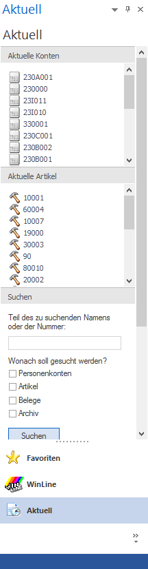
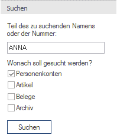
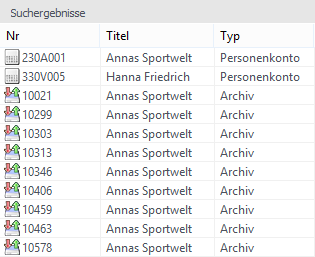

Die Kategorie "Aktuell" ist in 4 Bereiche unterteilt:

Ø Aktuelle Konten
Hier werden die letzten 20 verwendeten Personenkonten pro Mandanten angezeigt. Durch einen Klick auf die Kontonummer (DrillDown) wird das Programm WinLine INFO geöffnet, wo dann die Kontoinfo ersichtlich ist. Wird die Kontonummer mit der rechten Maustaste angewählt so stehen 2 Funktionen zur Auswahl:
ü Wert übernehmen
Wird der erste
Eintrag angewählt so kann der Werte, d.h. die Kontonummer, in ein Eingabefeld
eingefügt werden.
ü Stammdaten
Damit wird das
Stammdatenfenster des gewählten Kontos aufgerufen.
Hinweis
Diese Information der letzten 20 Personenkonten wird pro Benutzer gespeichert.
Ø Aktuelle Artikel
In diesem Bereich werden die letzten 20 verwendeten Artikel pro Mandanten angezeigt (diese Option wird von der WinLine FAKT gefüllt). Durch einen Klick auf die Artikelnummer (DrillDown) wird das Programm WinLine INFO geöffnet, wo dann die Artikelinfo ersichtlich ist. Wird die Artikelnummer mit der rechten Maustaste angewählt so stehen 2 Funktionen zur Auswahl:
ü Wert übernehmen
Wird der erste
Eintrag angewählt so kann der Werte, d.h. die Artikelnummer, in ein Eingabefeld
eingefügt werden.
ü Stammdaten
Damit wird das
Stammdatenfenster des gewählten Artikels aufgerufen.
Hinweis
Diese Information der letzten 20 Artikel wird pro Benutzer gespeichert.
Ø Suchen
Im Bereich Suchen kann mit einem Suchbegriff nach mehreren Objekten gesucht werden.

Vorgangsweise
Zuerst wird ein Suchbegriff eingegeben, wobei dieser Suchbegriff auch aus mehreren Teilen bestehen kann. Die einzelnen Teile werden jeweils mit ; getrennt, für die Suche werden die Teile mit ODER verknüpft.
Beispiel
Die Suche nach "ANNA;SPORT" bringt alle Datensätze, bei denen ANNA oder SPORT vorkommt, wobei jeweils eine Volltextsuche durchgeführt wird. Wird ein Datensatz gefunden, der für beide Suchbegriffe zutreffen (z.B. Annas Sportwelt), dann wird der Datensatz trotzdem nur einmal in der Ergebnisliste angezeigt (Dublettenabgleich).
Danach kann entschieden werden, in welchen Datenbereichen (Objekten) gesucht werden soll. Dabei stehen die Bereiche Personenkonten (inkl. Interessenten), Artikel, Belege und das Archiv zur Verfügung (im Archiv werden alle relevanten Einträge gefunden werden, auf die der Suchbegriff zutrifft, z.B. auch wenn der gefundene Eintrag kein Beleg, Artikel oder Personenkonto beinhaltet).
Durch Anklicken des Suchen-Buttons werden die ausgewählten Datenbereiche nach dem Suchbegriff durchsucht, wobei eine Volltextsuche durchgeführt wird. Der Bereich "Suchen" wird - damit für das Suchergebnis mehr Platz vorhanden ist - geschlossen.
Das Ergebnis wird dann im Bereich "Suchergebnisse" dargestellt.
Ø Suchergebnisse
In diesem Bereich werden alle Elemente angezeigt, die dem Suchkriterium entsprechen, wobei die Sortierung nach der Spalte Nummer erfolgt.

Dabei können verschiedene Objekte enthalten sein, wobei in der ersten Spalte jedes Objekt mit einem anderen Symbol dargestellt wird:
ü Personenkonto
ü Interessent
ü Artikel
ü Belege
ü Archiv
In der zweiten Spalte wird das jeweilige Suchergebnis (quasi: warum wurde dieser Eintrag gefunden) angezeigt.
In der dritten Spalte wird dann nochmals der Typ des Suchergebnisses angezeigt, wobei hier ggf. noch eine detailliertere Anzeige (z.B. Beleg wird in Angebot, Auftrag, Lieferschein und Rechnung unterteilt) vorgenommen wird.
Durch einen Klick auf das jeweilige Element in der ersten Spalte werden diverse Aktionen ausgelöst:
ü Personenkonto/Interessent
Es
wird die Kontoinfo im WinLine INFO geöffnet (sofern das Programm lizenziert
ist).
ü Artikel
Es wird die Artikelinfo
im WinLine INFO geöffnet (sofern das Programm lizenziert ist).
ü Belege
Es wird das
Belegmanagement geöffnet
ü Archiv
Es wird die
Archiv-Vorschau geöffnet.
Hinweis
Die Einstellungen für die Suche werden nicht gespeichert.